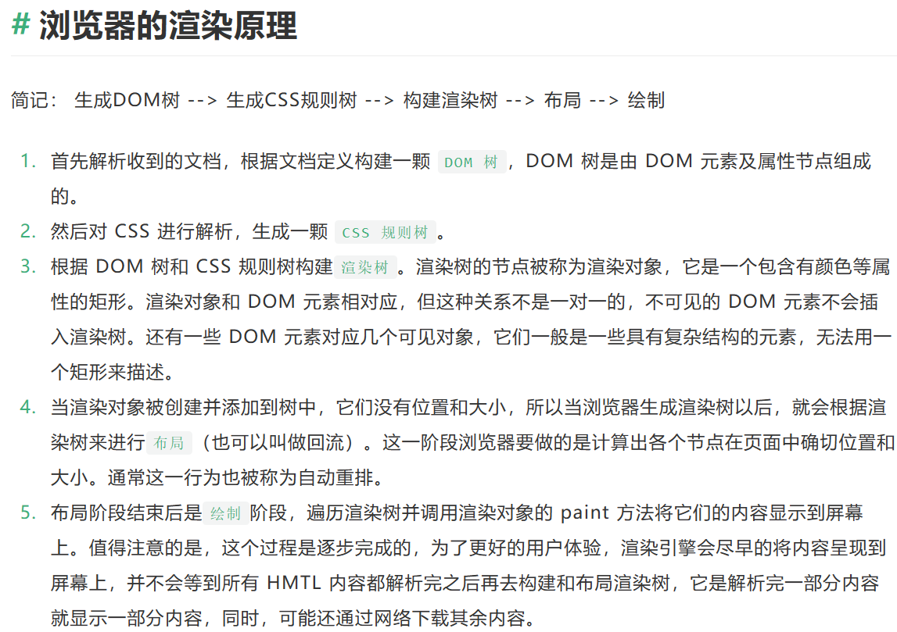

<!DOCTYPE html>
<html lang="en">

<head>
    <meta charset="UTF-8">
    <meta name="viewport" content="width=device-width, initial-scale=1.0">
    <title>图片随鼠标旋转</title>
    <style>
        /* 方法1  transition实现*/
        .image-container {
            position: relative;
        }

        .image-container img {
            height: 500px;
            transition: transform 3s ease;
            /*表示当发生transform变换时，它将花费3秒的时间进行平滑过渡，并采用默认的缓动函数（ease） */
        }

        .image-container:hover img {
            transform: rotate(360deg);
        }

        /* 方法2  动画animation实现*/
        .r_list img {
            height: 500px;
        }

        .r_list:hover img {
            animation: xycms_xz 3s ease infinite;
        }

        @keyframes xycms_xz {
            0% {
                transform: rotate(0deg);
            }

            100% {
                transform: rotate(360deg);
            }
        }
    </style>
</head>

<body>
    <!-- <span class="image-container">
        
    </span>
    <br />

    <span class='r_list'>
        
    </span> -->
    <script>

        function asyncLoadImg(src) {
            return new Promise((resolve, reject) => {
                const img = document.createElement('img')
                // onload 事件会在页面或图像加载完成后立即发生。
                img.onload = () => {
                    resolve(img);
                }

                img.onerror = () => {
                    const error = new Error(`图片加载失败，url：${src}`)
                    reject(error);
                }
                img.src = src;
            });
        }
        const url = 'https://t7.baidu.com/it/u=4036010509,3445021118&fm=193&f=GIF';
        const url2 = 'https://t7.baidu.com/it/u=963301259,1982396977&fm=193&f=GIF';
        asyncLoadImg(url)
            .then(img1 => {
                console.log(img1);
                return asyncLoadImg(url2);
            })
            .then(img2 => {
                console.log(img2);
            })
            .catch(error => {
                console.log(error);
            })


    </script>
</body>

</html>